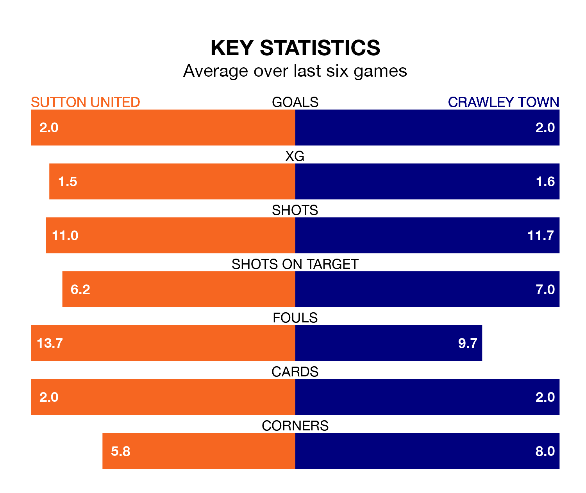

Sutton United host Crawley Town on Saturday at the VBS Community Stadium in EFL League Two.
In their last league match, on April 13, Sutton drew with Harrogate Town 2-2 away, with goals from Deon Moore and Harry Beautyman.
Crawley also drew, 1-1 at home against Barrow on Tuesday, with Danilo Orsi-Dadamo scoring their goals.
Sutton are 23rd in the table after 44 games, of which they have won nine and drawn 13, earning 40 points.
Crawley are 16 places ahead of United in seventh, with 20 wins and six draws putting them on 66 points.
With 53 goals in 44 games so far this season, the Us are scoring at below the league average rate with 1.2 goals per game. And they are conceding more than average, letting in 78 goals at a rate of 1.8 per game.
Town, meanwhile, are above average scorers, with 1.6 goals per game, compared to a league average of 1.5. They have conceded 1.5 goals per game.
In the last 10 years, Sutton and Crawley have played each other on six occasions. Sutton won four of them, Crawley one, and they drew once.
On average, the Us scored 1.5 goals and the Red Devils 0.7 in those matches.
Their last meeting was on October 10, when they played out a 0-0 draw.
The home side are in good form in EFL League Two, with four wins and a draw from their last six games.
With two wins and a draw over that period, the Red Devils' form is much worse – they have taken seven points from 18, compared to Sutton's 13.
In Orsi-Dadamo, the visitors have one of the league's most on-form strikers so far this season. He has notched 18 goals in 43 appearances, to sit seventh in the scoring charts.
His goal rate of one every 207 minutes is quicker than that of Harry Smith, Sutton's top scorer with a goal every 280 minutes, and a total of 10 goals in 35 games.
Updated: 15:40 (UTC), 18/04/24